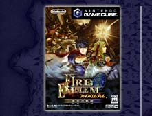
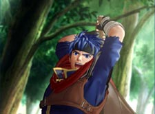
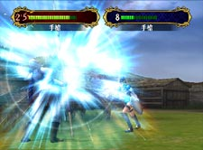
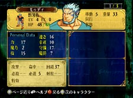
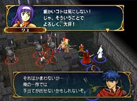

|  |
ゲームキューブソフト
発売日：2005年４月20日
希望小売価格：6,800円(税込)
ジャンル：ロールプレイングシミュレーション
プレイ人数：１人
|
|
|
| |
|
|
歴史あるロールプレイングシミュレーションゲーム、『ファイアーエムブレム』シリーズの最新作がゲームキューブから満を持して登場。今回の特色は、なんと言っても画面が３Ｄになったこと。モーションキャプチャーを駆使して、「さらにリアルに、よりファイアーエムブレムらしく」なった大作です。 |
|
|
今回の主人公はアイク。
傭兵団に所属する少年で、口数が多いわけではなく、ちょっとばかり無愛想な感じ？従来の作品では”王子様”など、育ちのいい雰囲気の主人公が多かったので、シリーズをプレイしてきたファンにとってはやや異色な主人公に感じます。
冒頭から３Ｄ表現を使ったムービーが随所に挿入され、これまでのファンは驚くのでは？また、これからファイアーエムブレムの扉を開きたい皆さんにとっても、新しいプラットフォームに切り替わってスタートラインが同じになったということで、この世界に入りやすいのではと思いました。動きも滑らか、３Ｄということでリアル、でも世界観を損なわない、とても美しいムービーです。
これまでのシリーズは２Ｄ表現でしたが、３Ｄ表現に切り替えることで、新鮮さとファイアーエムブレムらしさがキッチリ両立している、というのが正直な印象でした。というのも、キャラクターたちのモーションが非常に滑らかでありつつ、これまでのイメージを忠実になぞったものだったから。変にリアルすぎず、けれどもスムーズに各ユニットのカッコ良さを表現しているので、ついつい動きに見入ってしまうのです。
「ファイアーエムブレムの世界が立体になったらこうなりました」というセリフがそのままピッタリ来る、”らしさ”を感じていけます。 |
新要素として登場した”拠点”ですが、これを上手く活用することで戦略がどんどん変わります。ユニット編成や武器調達、ボーナスＥＸの割り振りなどを適当に流すと痛い目に遭うので、じっくりと取り組みたいところ(当然、痛い目に遭って深く反省しました)。
そして目を引くのは『ラグズ』たち『獣牙族』『鳥翼族』『竜鱗族』という、新ユニットたち。変身して闘う彼らを見ていても、全く違う風を感じて、従来のシリーズを遊んだことがある私も、嬉しいような不思議なような気持ちで入り込んで行けました。当然、シリーズならではのお約束的部分もあって、安心して遊べるという印象も確か。これまでおなじみだったものがなくなったり、全く新しいものが入ったりしつつも、スムーズに『蒼炎の軌跡』の世界を楽しめます。
シミュレーション画面も「動くチェスをやってるみたい」と感じるような、正当派シミュレーションらしさをひしひしと感じ、初心者にも嬉しい親切設計の丁寧な作りもありがたく思えます。当然、操作性はかなり快適です。スイスイと進む物語、シミュレーションにありがちな操作の猥雑さが感じられず、キャラクターの魅力と相まって、ちょっとシミュレーションには縁遠いな…という女性や未経験者にも絶対楽しめるはず。
詳しくはプレイしてからのお楽しみですが、誰もなんの心配もなく楽しいプレイを満喫できるということで、これまでシミュレーションは敷居が高いと感じていた人もぜひ！と太鼓判を押したい１本です。 |
 |